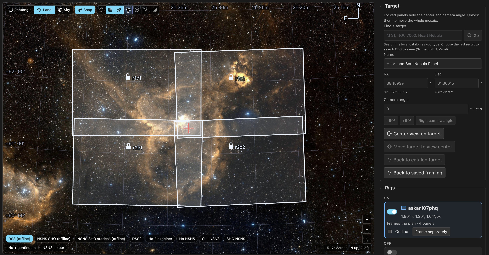
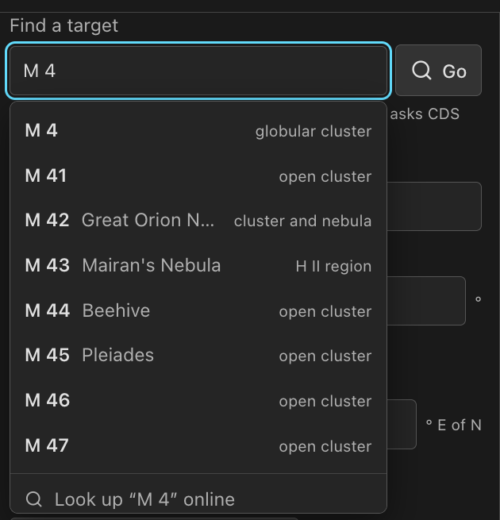
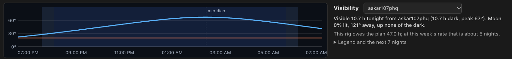
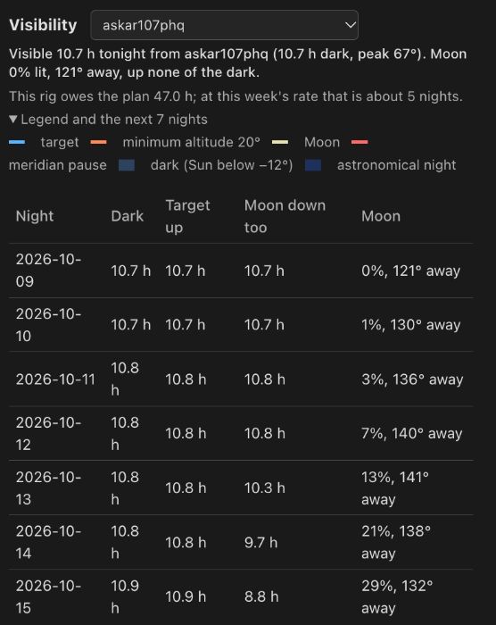

Framing
Place the target and each rig's field on a survey image, the way N.I.N.A.'s framing assistant does. Place mosaic panels one by one, check tonight's visibility from every rig, and see finished panels on the sky.

Move and turn the field
Open a plan's workspace; it opens on Framing. The rectangle is the field of the rig that sets the panel size. It appears at once, centered on the target's catalog coordinates and rotation.
- Drag the rectangle to move the target. Drag its handle to turn it.
- Type a camera angle, use the quarter-turn buttons, or take the rig's fixed camera angle in one click.
- Scroll, or use the corner buttons, to zoom from three arcminutes out to a hemisphere. A trackpad zooms as far as a wheel for the same distance.
- A compass and a readout show orientation, center, angle and extent. Coordinates show five decimals of a degree and angles two; the draft keeps every digit.
Drags work both of N.I.N.A.'s ways, and a third moves one mosaic panel. The buttons at the top of the stage pick one:
| Mode | Drag the rectangle | Drag the sky |
|---|---|---|
| Rectangle (default) | Moves the target. | Looks around; the target stays. |
| Panel | Moves the panel under the pointer. See Drag a panel. | Looks around. |
| Sky | — | Turns the sky and the target under a fixed rectangle. Shift-drag looks around. |
While a panel is locked, dragging the rectangle looks around instead, and the stage says which panels hold the mosaic.
Turn the sky with the camera keeps the rectangle upright and turns the sky by the camera angle, as N.I.N.A.'s "rotate sky" does. The stage is a stereographic globe about the view center, so a drag turns the sky under the pointer. The browser remembers these choices.
Move target to view center and Center view on target keep looking and planning apart: panning never moves the plan.
Find a target
Find a target offers names as you type. The server's Seiza object catalog answers first, with no network: designations, common names and aliases, one row per object with its kind. The last row looks the name up online at CDS Sesame (Simbad, NED, VizieR). Enter takes the highlighted row, else an exact local match, else goes online.
A pick moves the target and the view without saving. Undo puts the previous target back; Back to saved framing drops every change since the last save. The server keeps Sesame answers, hits for 90 days and misses for a day, so a name goes online once.

Survey layers
Chips on the sky switch the picture: the DSS2 color plates N.I.N.A. starts from, and the narrowband surveys (Finkbeiner H-alpha and the Northern Sky Narrowband Survey's H-alpha, O III, SHO and color layers). The Survey list under View holds every layer: DSS2 red, blue and near infrared, SDSS, DESI Legacy, SkyMapper, 2MASS, CTA-FRAM and the Mellinger panorama.
The layer is how the sky is shown, not part of the framing. Picking one is never an unsaved change, and the browser keeps it for every plan. The server fetches survey tiles from CDS HiPS2FITS and caches them, so a view you have seen works offline. Survey imagery is a composition aid, not pointing evidence.
Offline sky maps
N.I.N.A. publishes its framing assistant's whole-sky caches. Install one into the server's cache and the framing view renders any view from its tiles with no network:
psf-guard sky-maps install full --cache-dir /path/to/cache # DSS plates, 3.3 GB
psf-guard sky-maps install nsns-ohs --cache-dir /path/to/cache # NSNS SHO with stars, 1.4 GB
psf-guard sky-maps install nsns-ohs-starless --cache-dir /path/to/cache # NSNS SHO starless, 0.5 GB
psf-guard sky-maps list --cache-dir /path/to/cacheA folder copied from a rig's own %LOCALAPPDATA%\NINA\FramingAssistantCache
works too: drop it under <cache>/director/sky-maps/. A running
server offers a new folder within half a minute.
An offline map is preferred wherever it can stand in for an online survey: the DSS set for DSS2 color, the SHO set for the online NSNS SHO layer. A new framing starts on the offline DSS map. The online layer stays a click away. The NSNS sets are CC BY-NC-SA; the attribution line under the view says so.
Marks
Buttons at the top of the stage switch the layers drawn over the picture:
- Grid: an equatorial grid whose spacing follows the zoom, declination down the left edge and right ascension along the top.
- Constellations: figures and names once the view is wide enough.
- Deep-sky marks: objects from the Seiza object catalog at their catalog size and angle. On by default.
- Comets and asteroids: from Seiza's minor-body catalog, placed for the moment you look.
- Sun, Moon and planets: from a built-in ephemeris good to a few arcminutes.
Catalogs marked under View picks which catalog families get marks. Messier, NGC, IC, Sh2, LDN, LBN and SNR start on; Barnard, vdB, UGC, PGC, HD and WR wait for a chip. A layer whose catalog is not on the server says so on the stage. A mark is a catalog place, not pointing evidence.
Rigs and panel size
The sidebar has one card per rig, this plan's rigs first. Each card shows a swatch in the color of the rig's outline on the sky, its field and pixel scale, and its part in the framing.
- The On switch adds a rig to the plan. Rigs are grouped On and Off; several can be on.
- Turning a rig on, or clicking an on rig's heading, frames the plan with it: its field sets the panel size, its card is highlighted, and it reads Frames the plan.
- A shared mosaic of more than one panel keeps its panels where they are. When a picked rig's field differs, its card says "Its field moves all 4 panels" and offers Frame separately, which gives the rig its own copy of the panels, Use its field, which sizes the shared mosaic by the rig anyway, or Cancel. Until then the card reads field differs, and activation warns about it.
- Shared framing shows the rig the size comes from. Type a size sets one by hand. Use current field appears when that rig's optics changed since.
- When the rig that sets the size goes off, the first rig that is on and shoots the shared framing takes over, one with the same field first. When no such rig is on, or the next would resize a mosaic of more than one panel, the size stays and the line says its rig is off.
- Outline draws a rig's field on the sky, labeled with its name.
Rigs take their optics from their own frames when PSF Guard adopts them. Correct them in rig setup.
Lay out mosaic panels
A framing's panels are placed one by one under Mosaic
panels. Each keeps its name wherever it moves: r1c2 for a
panel a grid made, p5 for one added since. While no panel is
locked, Rows, Columns and
Overlap lay the panels out as a grid. Once panels are placed
otherwise, the box shows Minimum overlap instead, and
Lay out as a grid instead offers to start again.
The sky draws every panel, with its name in small type when the mosaic has more than one. The panel list gives each panel's frames, a padlock on a locked one, and check overlap on one that breaks the overlap rule. Click a panel on the sky or in the list to choose it. The undo and redo buttons beside the list step back through panel edits, moves and turns alike.
On the Exposures tab, each rig can take every panel or only some, so a wide rig takes the whole field while a long-focus rig takes one corner. A coverage note lists any panel no rig shoots. Activation adds a Target Scheduler target for each new panel in the same project and leaves shot panels' targets alone. The Library and the header's target switcher show the panels as one mosaic, whatever their shape. A grid saved before opens unchanged, as the panels it made.
Panels already shot
A panel whose target has frames starts locked where they were shot. It is drawn solid with a padlock, with the field and camera angle the frames were shot with, not the plan's current camera. Fresh plate solves of the frames say where it was taken; without them, the frames' FITS headers or rotator readings, then the target as planned. The chosen panel reads, for example, "Drawn as shot: 1.80° × 1.20° at 0.0°."
- A locked panel does not move or turn. While one is locked, the target's center, camera angle and search wait, since each would move it.
- Unlock frees the chosen panel, and it stays unlocked. Moved more than a quarter of a panel, or turned more than a degree, it gets a new Target Scheduler target at activation; the old target keeps its frames. Lock holds any chosen panel the same way.
- New panels use the rig's current field and meet a shot panel at its real edges.
- Every other rig that is on and did not shoot the panel shows its field as an outline where the panel was shot, so turning a rig on or picking it shows what it would take there. Untick that rig's Outline to hide it until you leave the page; nothing is saved.
Add panels
Add panels works Beside the chosen panel or on the Whole mosaic:
- N, E, S, W and the corners are directions on the sky: each adds on the panel side that faces nearest that way at this camera angle. On the whole mosaic, each adds a panel at the end of every row or column that way.
- Ring around puts a panel on every side of the whole mosaic, corners too.
- Fill holes fills the gaps in the mosaic's rectangle.
- A + on each side and corner of the chosen panel adds one there.
New panels go in at the Overlap set beside the pad, never less than the minimum.
Drag a panel
With Panel chosen at the top of the stage, drag one panel on the sky. While it moves, its overlap with each neighbor is shaded with its share in percent. It settles lined up with another panel, or at the minimum overlap beside one. A drop that would leave a gap, too thin an overlap or a lone panel goes back and says why. Hold Alt (Option) while dropping, or press Place anyway in the note, to keep it there.
Turn Snap off to drag and turn freely: a panel stays where you drop it. One that breaks the overlap rule is dashed in the warning color and listed under the panels. Escape, or a cancelled touch, puts a dragged panel back.
Turn a panel
Each panel is shot at its own camera angle: the framing's, plus its own turn, plus north's lean at its center (about Δα · sin δ). So a wide mosaic in the north stays square on the sky. Targets already shot keep their angle.
Turn the chosen panel by dragging the handle past its top edge, with [ and ], or by typing a Turn; Framing angle puts it back. A turn settles on the framing's angle, a neighbor's or a shot panel's within 2°. A turn that leaves an overlap short springs back like a drop; Alt, or Turn anyway, keeps it.
Every rig gets each panel's angle, whether it has a rotator, turns its camera by hand, or has a fixed camera.
Keys
With a panel chosen and the sky focused:
| Key | Action | Key | Action |
|---|---|---|---|
| Arrows | Nudge 1% of a panel (Shift: 10%) | [ / ] | Turn 1° (Shift: 10°) |
| L | Lock or unlock | Delete | Remove the panel |
| Esc | Cancel a drag, or let go | Ctrl+Z / Ctrl+Shift+Z | Undo / redo |
[, ] and L go by the key's place, so every keyboard layout has them.
Frame a rig on its own
Frame separately gives a rig its own panels, camera angle and panel size, drawn in its own color beside the shared framing. Choose Edit on its card: while its editor is open, Mosaic panels and the sky work on its panels with the same tools as the shared framing's. It follows the shared center until you drag it, type a center, or move it to the view center. Shared center puts it back in step; Use shared drops it.
Separate framings are judged as one cover of the object: the shared
framing while a rig shoots it, and the own framing of each rig that is on. A
rig's own panels need not touch where another rig's panels cover the sky
between them. Gaps, lone panels and groups that never meet are said for the
whole object, with another framing's panel named by its rig, or
shared, before its name. A seam between two rigs' panels needs the
larger of their two minimum overlaps, counted on the smaller panel, or it is
flagged as thin.
The separate framing of a rig that is off is drawn dim and stays put. One whose rig is gone is listed with Remove. When every rig that is on frames separately, nobody shoots the shared framing, so its rectangle is hidden and activation plans no target for it.
Visibility tonight
Under the sky, a strip times the target from each rig with a site. Tonight runs from local noon to the next noon. The verdict gives dark hours (Sun below −12°), hours inside the limits Target Scheduler applies, peak altitude, and the Moon's phase, separation and hours up.
- The chart draws the night from an hour before dusk to an hour after dawn: the target's track, the horizon at the target's azimuth, the Moon dashed, and bands for darkness and astronomical night.
- A marker shows the meridian transit. The rig's meridian pause is a broken red stretch and comes out of the visible hours.
- The limits are the higher minimum altitude of rig and plan, the lower maximum, the rig's custom horizon plus the plan's offset, the plan's meridian window, and the rig's meridian pause.
- A rig framed on its own is timed at its own center, and follows it as you drag.
- A folded table gives the coming week. A rig in the plan also gets the hours it still owes and the nights that takes at this week's rate.
Pick another rig from the list to compare sites. Times come from planning-grade Sun and Moon positions; they help choose targets and nights.


Finished panels on the sky
The framing view draws each panel's finished stack where its plate solve puts it, beside the planned rectangles. A panel is a target activation wrote, or, for a rig no activation reached, a target of its Target Scheduler project. A plan taken in from Target Scheduler shows its stacks without being activated.
- The Finished stacks button among the layer buttons, or the Stacks box under the sky, turns the layer on and off. The browser keeps the choice.
- Stack shown picks which stack each panel shows: Best per panel (a current color stack first, else the mono stack with the most integration), one color composition, or one filter. The browser keeps the pick for each plan.
- A list gives every panel with its rig, frames accepted against desired, and why no stack is drawn: none built yet, none of the kind picked, or built but not solved.
Panels from different rigs sit side by side and are never blended. When the framing changed since the last activation, the list says so: stacks stay where their solves put them, and the rectangles show the new plan.
Save the framing
Save framing keeps the draft on the plan; the page's save bar does the same with the rest of your edits. A value the server would refuse is marked at its field with the reason: a panel side outside 0.01° to 30°, or a mosaic wider than 30°. A draft saved elsewhere since you loaded is refused until you reload. The server refuses a save that would move a locked panel, and names the panels to unlock first. Each save writes a locked panel's shot place from its frames, whatever the page sent.
Only a change to what activation writes (target, angle, panels) asks for another activation. Survey and view choices never do.